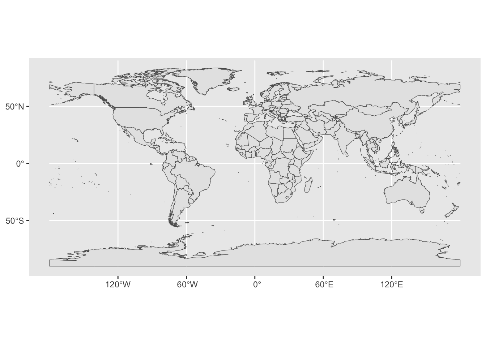
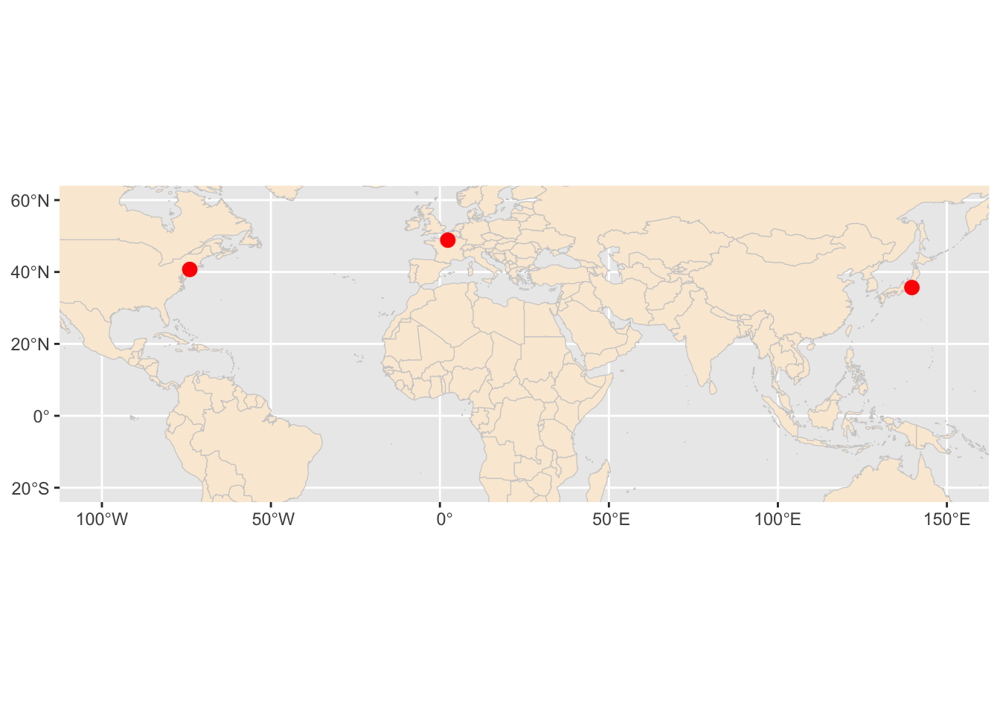

The following objects are masked from 'package:stats':
filter, lag
The following objects are masked from 'package:base':
intersect, setdiff, setequal, union
source("../R/strip_lat_lon_fr_pt.R")
Map with coordinates: World
# Fetch world map data as an 'sf' objectworld <-ne_countries(scale ="medium", returnclass ="sf")# Plot the mapggplot(data = world) +geom_sf()

Map three cities
# A standard data frame with coordinatescities_df <-data.frame(city =c("New York", "Paris", "Tokyo"),lon =c(-74.0060, 2.3522, 139.6503),lat =c(40.7128, 48.8566, 35.6762))# Convert to an sf object (4326 is the standard GPS CRS, WGS84)cities_sf <-st_as_sf(cities_df, coords =c("lon", "lat"), crs =4326)# Layer the points over the base mapggplot() +geom_sf(data = world, fill ="antiquewhite", color ="gray80") +geom_sf(data = cities_sf, color ="red", size =3) +coord_sf(xlim =c(-100, 150), ylim =c(-20, 60)) # Zooming into an area

Getting states
us_states <-ne_states(country ="United States of America")
Map my location
cities_df <-data.frame(city =c("State College"),lon =c(-77.84922),lat =c(40.79766))# Convert to an sf object (4326 is the standard GPS CRS, WGS84)cities_sf <-st_as_sf(cities_df, coords =c("lon", "lat"), crs =4326)ggplot() +geom_sf(data = us_states, fill ="antiquewhite", color ="gray80") +geom_sf(data = cities_sf, color ="red", size =1) +coord_sf(xlim =c(-80.5, -74.8), ylim =c(39.5, 42.5)) # Zooming into an area
# Convert to an sf object (4326 is the standard GPS CRS, WGS84)pa_higher_ed_sf <- sf::st_as_sf(x = pa_higher_ed_trimmed,coords =c("lon", "lat"),crs =4326 )
Map the data
ggplot() +geom_sf(data = us_states, fill ="antiquewhite", color ="gray80") +geom_sf(data = pa_higher_ed_sf, aes(color = Sector), size =1) +coord_sf(xlim =c(-80.5, -74.8), ylim =c(39.5, 42.5)) # Zooming into an area
Figure 2
ggmap
Requires API key. Don’t use for class.
Choropleth
AI suggested
# Load country shapes (excluding Antarctica for a cleaner view)world_map <-ne_countries(scale ="medium", returnclass ="sf") %>%filter(name !="Antarctica")
Figure 3
# 1. Install and load necessary packageslibrary(sf)library(tigris)
To enable caching of data, set `options(tigris_use_cache = TRUE)`
in your R script or .Rprofile.
library(dplyr)library(ggplot2)# Set tigris options to cache shapefilesoptions(tigris_use_cache =TRUE)# 2. Get county sf polygon data for a state (e.g., Virginia 'VA')# Use cb = TRUE for generalized/lighter polygonscounty_sf <-counties(state ="VA", cb =TRUE, class ="sf")
# 3. Create or load your sample county-level dataset# Ensure your county identifier matches the FIPS code ('GEOID' in tigris)set.seed(123)county_data <-data.frame(GEOID = county_sf$GEOID,value =rnorm(nrow(county_sf), mean =50, sd =10))# 4. Join the spatial sf object with your datamap_sf <-left_join(county_sf, county_data, by ="GEOID")# 5. Plot the choropleth map with ggplot2 and geom_sf()ggplot(data = map_sf) +geom_sf(aes(fill = value), color ="white", size =0.1) +scale_fill_viridis_c(option ="plasma", name ="Value") +theme_void() +labs(title ="County-Level Choropleth Map",subtitle ="Virginia Counties Colored by Sample Values",caption ="Source: U.S. Census Bureau / tigris" )